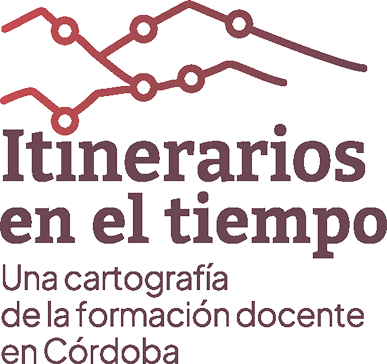

El proyecto propone reconstruir los escenarios, acontecimientos y debates que fueron entretejiendo el devenir del sistema formador de Córdoba a través de una cartografía: una composición de piezas que en tanto narrativa transmedia no pierde de vista nuestro objeto de estudio. Cada uno de los lenguajes se propone construir saberes vinculados a la conformación del sistema formador en Córdoba, a la agenda política, cultural social y educativa en la que se fue desarrollando y especialmente se buscan las huellas del oficio de enseñar que pueden reconocerse en los diferentes escenarios institucionales de esta época.